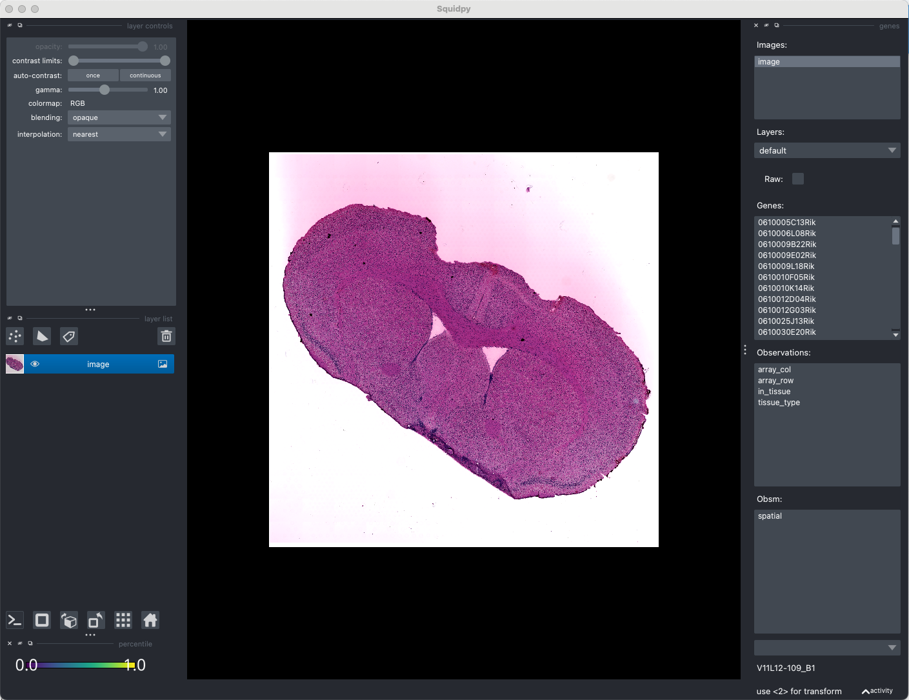

Customizing long range channels by Napari
In this tutorial, we will give an example to show how to customize long-range channels by using Napari, an interactive tool. Since Napari is difficult to use in Linux, we recommend doing this in macOS.
Installation
First, we need to install the squidpy package with Napari by using pip install 'squidpy[interactive]' in your environment.
See also
For basic usage of Napari, please see Squidpy document
Usage
# Importing packages
import os
import numpy as np
import pandas as pd
import scanpy as sc
import squidpy as sq
import seaborn as sns
import matplotlib.pyplot as plt
import metachat as mc
# Setting your work dictionary
os.chdir("/Users/songhaoluo/Library/CloudStorage/OneDrive-UCIrvine/2_Unpublished_work/1_Metabolite_Chat/4_Codes/test/multi-omics_mouseBrainParkinson")
For spatial transcriptome and spatial metabolome combined data by tutorial, we can download processed data from zenodo.
adata = sc.read('data/adata_combined.h5ad')
image = adata.uns['spatial']['V11L12-109_B1']['images']['hires']
img = sq.im.ImageContainer(image, library_id='V11L12-109_B1', scale=adata.uns['spatial']['V11L12-109_B1']['scalefactors']['tissue_hires_scalef'])
Hint
You can check the save information of your images in adata.uns['spatial']. The parameter scale in sq.im.ImageContainer is very important.
Next, please activate interactive interface.
viewer = img.interactive(adata)
OMP: Info #276: omp_set_nested routine deprecated, please use omp_set_max_active_levels instead.
Traceback (most recent call last):
File "/Users/songhaoluo/mambaforge/envs/metachat_env/lib/python3.9/site-packages/squidpy/pl/_interactive/_widgets.py", line 41, in <lambda>
self.itemDoubleClicked.connect(lambda item: self._onAction((item.text(),)))
File "/Users/songhaoluo/mambaforge/envs/metachat_env/lib/python3.9/site-packages/squidpy/pl/_interactive/_widgets.py", line 146, in _onAction
self._controller.add_points(vec, key=item, layer_name=name)
File "/Users/songhaoluo/mambaforge/envs/metachat_env/lib/python3.9/site-packages/squidpy/pl/_interactive/_controller.py", line 187, in add_points
self._hide_points_controls(layer, is_categorical=is_categorical_dtype(vec))
File "/Users/songhaoluo/mambaforge/envs/metachat_env/lib/python3.9/site-packages/squidpy/pl/_interactive/_controller.py", line 307, in _hide_points_controls
gl: QGridLayout = points_controls.grid_layout
AttributeError: 'QtPointsControls' object has no attribute 'grid_layout'
We can see a interface like this:
Click new shapes layer, and click Add polygens or Add polygens lasso to Select the contiguous region that you think will be the LRC. Then you change the layer name to ‘LRC’ and type SHIFT + E, you will get a observations named ‘LRC_shapes’.
You can find the LRC_shape is ready in the adata.obs['LRC_shapes'].
adata
AnnData object with n_obs × n_vars = 3011 × 35300
obs: 'in_tissue', 'array_row', 'array_col', 'tissue_type', 'LRC_shapes'
var: 'features'
uns: 'log1p', 'spatial', 'tissue_type_colors', 'LRC_shapes', 'LRC_shapes_colors'
obsm: 'spatial'
Change the name of adata.obs['LRC_shapes'] to adata.obs['LRC_XXX_filtered'] for subsequent analysis, where XXX is the LRC name.
adata.obs.rename(columns={'LRC_shapes': 'LRC_CSF_filtered'}, inplace=True)
import matplotlib.colors as mcolors
fig, ax = plt.subplots(figsize = (6,5))
sq.pl.spatial_scatter(adata,
color = 'LRC_CSF_filtered',
alpha = 1,
ax = ax)
ax.set_box_aspect(1)